Hình Ảnh 1

Alexandre De Rhodes (Đắc Lộ)
( 1593-1660 )
“Tôi tin rằng vì nước Pháp ngoan đạo nhất trong tất cả các vương quốc nên sẽ cung cấp cho tôi nhiều quân lính để đi chinh phục toàn thể Đông Phương, và tôi sẽ tìm ra phương cách để thu dụng nhiều Giám mục và Giáo sĩ người Pháp cai quản các nhà thờ mới nầy”
Helen B. Lamb: Vietnam’s Will to Live, 1985, trang 38 và 39
“Việt Nam: Đây là một vị trí cần phải chiếm lấy và khi chiếm được vị trí nầy thì thương gia Âu châu sẽ tìm được một nguồn lợi nhuận và các tài nguyên phong phú”
Nhà Xuất bản Khoa học: Lịch sử Việt Nam, 1976, trang 304
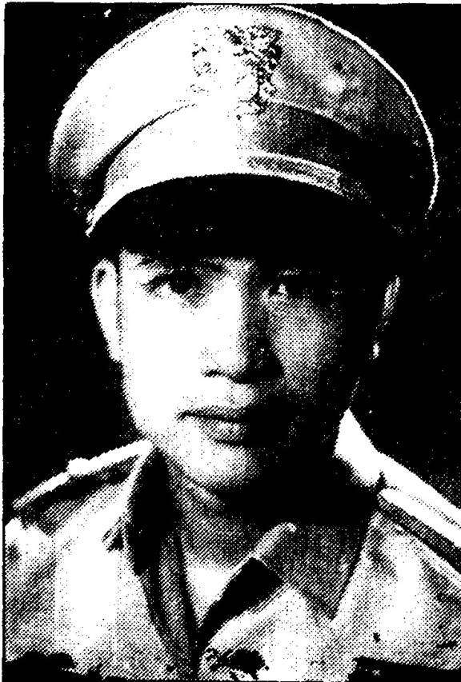
Pierre Joseph Georges
Pigneau de Béhaine (Cha Cả)
( 1741-1799 )
Vị Giáo sĩ thừa kế và thực hiện ý đồ của Đắc Lộ, người đở đầu cho Nguyễn Ánh và sau nầy dẫn Hoàng tử Cảnh đến bệ kiến vua Louis XVI để xin quân viện và ký Hiệp ước Versailles
(28-11-1787), hiệp ước đầu tiên bán nước Việt Nam cho thực dân Pháp
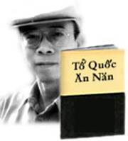
Georges Thierry d’Argenlieu
(1884-1964)
Cựu tu sĩ Công giáo giòng Carmélite, Đô đốc Hải quân, Cao ủy đầu tiên của thực dân Pháp tại Đông Dương.
Kỳ Ngoại Hầu Cường Để
(1882-?)
Biểu tượng tinh thần của các nhóm chính trị Việt Nam chống Pháp nhưng thân Nhật trong thập niên 40’

Tổng Giám mục Trịnh Như Khuê
Chịu trách nhiệm Giáo phận Hà Nội từ năm 1954
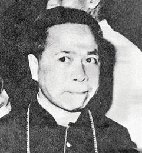
Giám mục Phạm Ngọc Chi
Người đã van xin Đại tá Vanuxem đừng rút quân Pháp khỏi Bắc Việt. Sau 1954, cai quản Giáo phận Đà Nẳng, phụ tá cho Cố vấn Chỉ đạo Ngô Đình Cẩn trong đảng Cần Lao tại miền Trung.
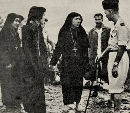
Đại tá LeRoy
Tư lệnh Quân đội Công Giáo Bình Đại (Bến Tre, Kiến Hòa), lực lượng thân binh của Quân đội Pháp, đang phủ dụ các Bà Xơ.

Các ông Hồ Chí Minh, Trưòng Chinh, Võ Nguyên Giáp và Trung tá A. Peter Dewey,
Trưởng nhóm 7 người O.S.S. (Office of Strategic Services). Dewey bị Việt Minh bắn nhầm trên đường ra phi trường tại Sài Gòn (1945) và là quân nhân Mỹ tử nạn đầu tiên tại Việt Nam.
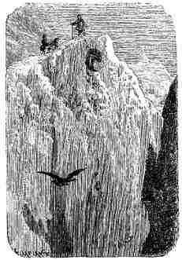
Đại tướng Võ Nguyên Giáp )
Thành lập Đội Võ trang Tuyên truyền 34 người tại chiến khu Bắc Việt ngày 22-12-1944 và chỉ huy Quân đội Nhân dân trong hai cuộc chiến tranh chống lại quân đội viễn chinh Pháp và Mỹ sau nầy.

Giáo chủ Cao Đài Phạm Công Tắc (1893-1956) và đội Hộ Vệ Quân trước Tòa Thánh Thất tại Tây Ninh
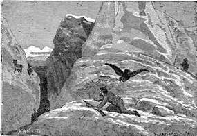
Tướng Trịnh Minh Thế
Tư lệnh Quân đội Quốc gia Liên Minh Cao Đài
Bị tử nạn bí mật tại Cầu Chử Y (1955) Sài Gòn trong lúc giao tranh với lực lượng võ trang Bình Xuyên.

Tổng thống Ngô Đình Diệm đang đón tiếp Hồng Y Agagianan tại Sài Gòn (1959) nhân dịp Tòa thánh Vatican nâng nhà thờ Đức Bà lên hàng Vương Cung Thánh Đường
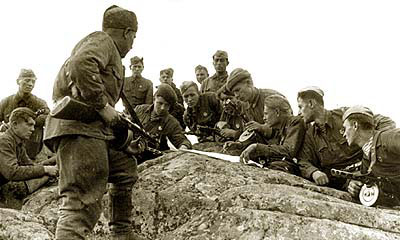
Tổng thống Ngô Đình Diệm, ngồi giữa Đại sứ Trần Văn Chương và Thượng Nghị sĩ Henry Cabot Lodge, trong chuyến công du Hoa Kỳ (1957)
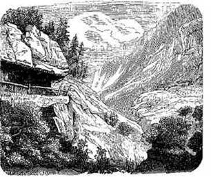
Hình nộm Cựu hoàng Bảo Đại trong chiến dịch hạ nhục do chính phủ Ngô Đình Diệm tổ chức trong cuộc Trưng cầu Dân ý ngày 23-10-1955
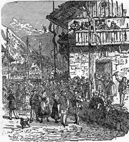
Cuộc biểu tình vĩ đại tại Sài Gòn năm 1947 yêu cầu cựu hoàng Bảo Đại (đang ở Hồng Kông) hồi hương chấp chánh.
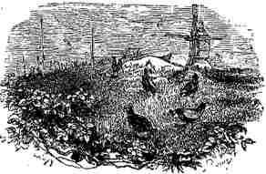
Luật sư Nguyễn Hữu Thọ
Chủ tịch Mặt trận Dân tộc Giải phóng Miền Nam Việt Nam trong một
buổi lễ tuyên thệ tại mật khu ở miền Nam vào đầu thập niên 60’

Tướng Lê Quang Vinh (biệt danh Ba Cụt)
Chỉ huy một lực lượng võ trang Hòa Hảo chống cả Việt Minh lẫn Pháp, trước Tòa án Quân sự Cần Thơ năm 1956. Từ chối không chịu phép Rửa Tội của Công giáo.
Do đó, bị bác đơn xin ân xá nên bị chặt đầu và tử thi bị chặt nhỏ đem dấu biệt tích
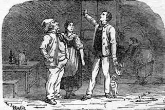
Các Thượng tọa Thích Hộ Giác, Thích Thiện Minh và Thích Trí Quang(từ trái qua phải)
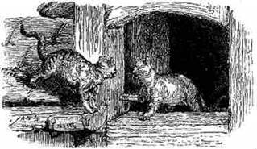
Tăng Ni và đồng bào Phật tử đang đấu tranh cho Tự do Tín ngưỡng và Công bằng Xã hội trong Mùa Pháp nạn 1963
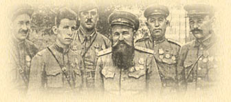
Hòa thượng Thích Quảng Đức tự thiêu để phản đối chính sách đàn áp Phật giáo của chính quyền Ngô Đình Diệm và để thức tỉnh cấp lãnh đạo chế độ sớm hồi tâm.
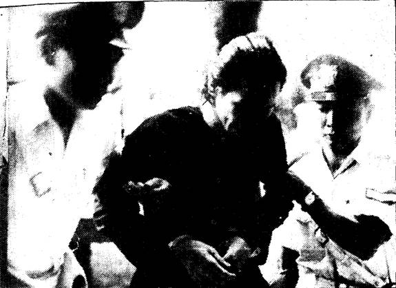
Ngày 2-11-1963, một đơn vị Thủy Quân Lục Chiến chiếm được Dinh Gia Long. Đông đảo dân chúng thủ đô ào ạt đến xem để khích lệ và hoan nghênh anh em quân đội.
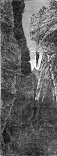
Thanh niên và sinh viên thủ đô hân hoan chào mừng Trung tướng Trần Văn Đôn trên đại lộ Thống Nhất, Sài Gòn.
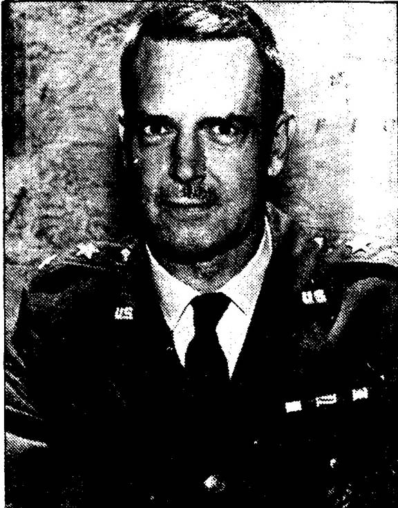
Trụ sở Báo chí gia nô của chế độ Ngô Đình Diệm bị dân chúng thủ đô đập phá, và các tàn tích bị quẳng đầy đường phố
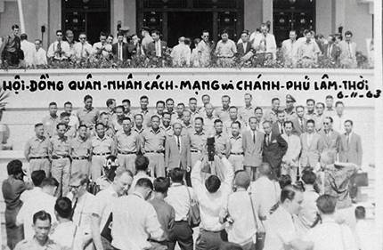
Hội Đồng Quân Nhân Cách Mạng và Chính phủ Lâm Thời ra mắt đồng bào và báo chí ngày 6-11-1963 tại tiền đình Bộ Tổng Tham mưu
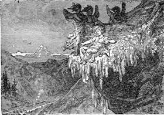
Tác gỉa (trái), Trung tướng Dương Văn Minh và Trung tướng Tôn Thất Đính ngay sau ngày cách mạng 1-11-1963
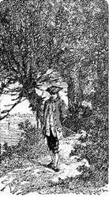
Thượng tọa Thích Huyền Quang đọc diễn văn chào mừng quan khách trong lễ khai mạc Đại hội Phật giáo Thống nhất đầu tiên vào năm 1964. Tác giả ngồi ở hàng thứ nhì, bên trái
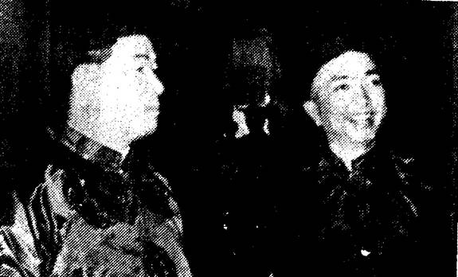
Cuộc họp báo đầu tiên của Chính phủ Cách mạng Lâm thời ngày 6-11-1963.
+ Từ trái sang phải: Trung tướng Tôn Thất Đính, Bộ trưởng Nội Vụ; Thủ tướng Nguyễn Ngọc Thơ, tác giả và Ngoại trưởng Phạm Đăng Lâm.
+ Hàng thứ nhì: Bộ trưởng Kinh tế Âu Trường Thanh, Bộ trưởng Tài chánh Lưu Văn Tính, Bộ trưởng Phủ Thủ tướng Lưu Thành Cung, Bộ trưởng Giáo dục Phạm Hoàng Hộ và Bộ trưởng Y tế Vương Quang Trường
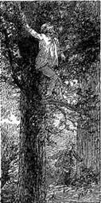
Họp báo với Trung tướng Nguyễn Khánh ngay sau cuộc Chỉnh lý ngày 30-1-1964
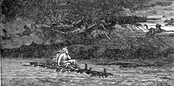
Thủ tướng Trần Văn Hương trình diện Nội các với Quốc trưởng Phan Khắc Sửu
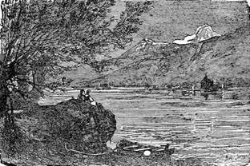
Tổng thống Đệ nhị Cộng hòa Nguyễn Văn Thiệu trong một buổi kinh lý tại Quân Đoàn I